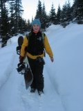
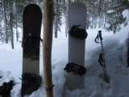
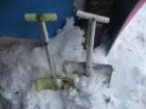
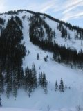
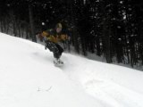

Крутые Тётки
- 16-17 декабря 2008 -
"А давай твой день рождения на Мамае отметим?!"
- сказала мне Таня. Почему нет? Я как раз хотела уехать в лес на день
рождения. Тем более с Таней - хоть на край света. Я согласилась, не смотря
на то, что была середина недели и поехать с нами никто больше не мог.
Лёха, услышав про нашу идею, назвал нас крутыми тётками. А мне подумалось:
"Посмотрим, насколько мы крутые, по возвращению…" . Переночевали
у Лёхи, который, спасибо ему огромное, снарядил нас всем - от биперов
и лавинного щупа до плана :) Плана, где закопаны продукты, плитка и спальники.
Выпили чай с бергамотом и…
…Нас встретила кромешная тьма, хрустящий снег под ногами
и такое щемящее чувство внутри - одни, совсем одни на всем Мамае - ЗДО-РО-ВО!!!
Привязали доски и потопали. Вообще, глядя на борды на веревочке, автоматически
начинаю напевать песенку: "Я так хотел иметь щеночка, чтобы водить
его на поводочке, щенооочка!.." Вот так с песней дошли до зимухи,
разгадывая по пути загадку человека в ботинках с узкими носами и широким
шагом. :)
- 
-
-
- 
- 
-
"Мне нужен план!" - сказала Таня. "Таня?
Ты же не куришь? :) Ааа, не тот план!" Вот ёлочка, вот еще одна…
копать нужно тут! Или… тут? Или?.. Кажется, здесь больше елочек, чем на
плане! Ой, это и тропа-то не та! Смеёмся уже как-то истерично. Ну да,
это вам не с Лёхами ходить, которые все быстренько найдут, откопают, печку
мигом затопят. Найти и откопать вещи заняло у нас целый час! "Вот
блондинки!" - думали мы про себя, а вокруг будто рота солдат прошла,
дааа… ОБРЫЛИ мы всё основательно! :) Долго растапливали печку… В общем,
разобравшись с хозяйством и согревшись, мы пошли кататься на Мамай, потом
поднялись на Лесной и много еще куда, только было это все во сне… Потому
что мы уснули! :) Ну да, уснули. А проснувшись, пилили и рубили дрова,
чтоб хватило надолго.

Ах да, день рождения! Тортик со свечами, второй уже, и песенка
Happy Birthday на испанском от Тани, дрова в печке потрескивают. Уютный
такой день рождения :)

А утром мы все-таки сходили на Три березы и Таня учила меня
кататься. Съехали, и я начала понимать, что это оказывается и правда клёво
- сноуборд! :) Выкатывать тоже было здорово, особенно потому, что никого
не было! И никто не видел, сколько раз я падала.

А когда мы уходили, я посмотрела на гору наколотых дров, которые мы заготовили
и даже не использовали, и подумала: "Наверное, мы правда крутые тётки!"
Рассказ - Оля Михалёва
Фото - Оля Михалёва, Таня Юрочкина
Январь 2009
|